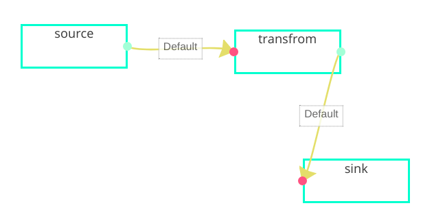

ETL 任务介绍
streamSql描述流计算非常简单快捷, 但某些时候有些业务逻辑不便于SQL化, 也不需要用到window等复杂机制, 虽然需要通过代码实现更复杂的数据数据处理, 但希望整个数据流处理变的简单, 那这时使用流式ETL是令人非常愉快的编码方式
# 节点
DFX对ETL过程进行如下三个环节(node)抽象, 将一切数据流活动都用如下三个环节表示, 并通过箭头表示数据流向, 通过一个flow来描述整个流计算过程
- source (该算子实现如何将数据流接入系统)
- transform (该算子实现如何将数据流进行转换)
- sink (该算子实现如何将数据流输到外部系统中)
# 流

如上图所示, 通过 flow 描述实时ETL过程, 实例为: Kafka -> 业务处理 -> HDFS